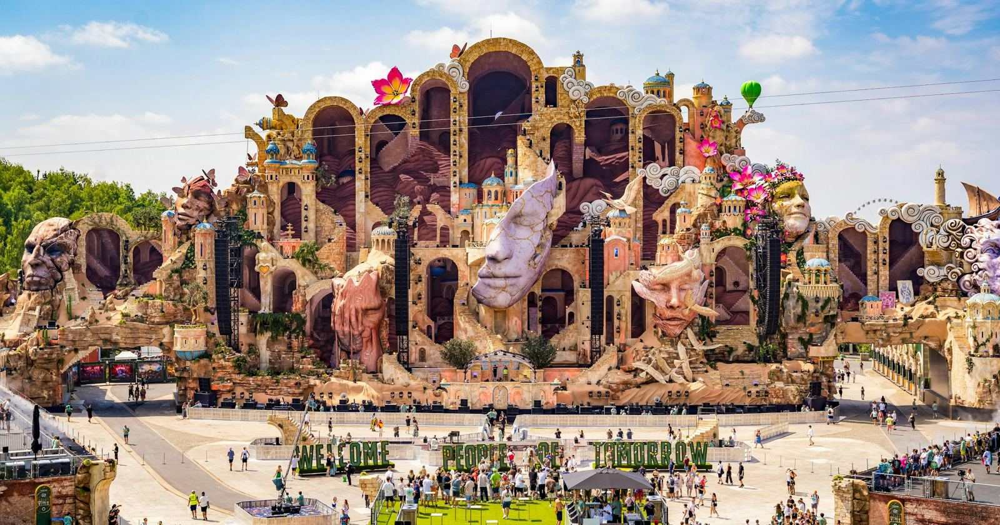

Festivals · Music
Tomorrowland Winter 2027
- Dates
- –
- Venue
- Alpe d'Huez
- Location
- Alpe d'Huez, France
- Format
- In-person
- Category
- Music
- Industry
- Music
- Organiser
- Tomorrowland / We Are One World
- Official website
- https://winter.tomorrowland.com/
About
Official tomorrowland.com: Tomorrowland Winter 2027 in Alpe d'Huez from 20 to 27 March 2027, with a published lineup announcement on the same official site. Dates are local to the host city (Central European Time, UTC+1 / UTC+2 in summer).
Topics: electronic, EDM, ski festival.
No organiser attendance figure found on the official pages fetched 24 Nov 2026. Ranked by our estimated size tier 'large' (30,000-100,000 attendees/visits), a judgement from format, venue and scale, not an official number.